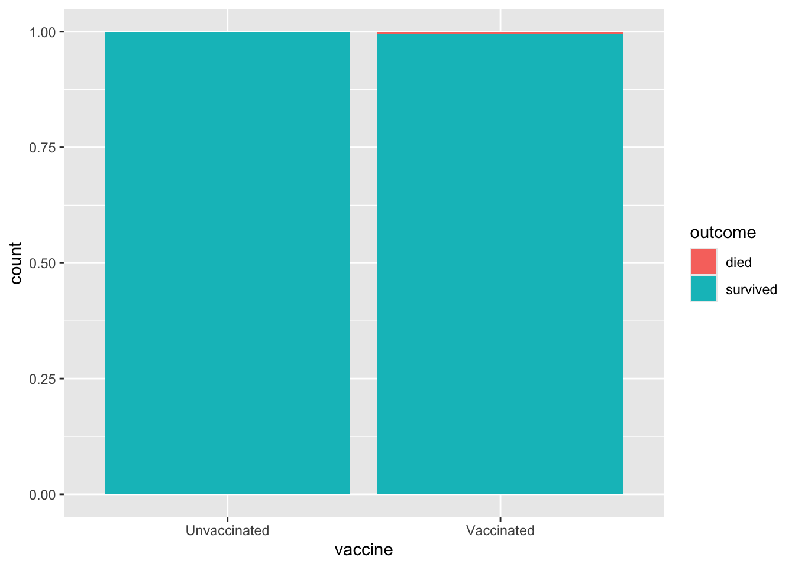
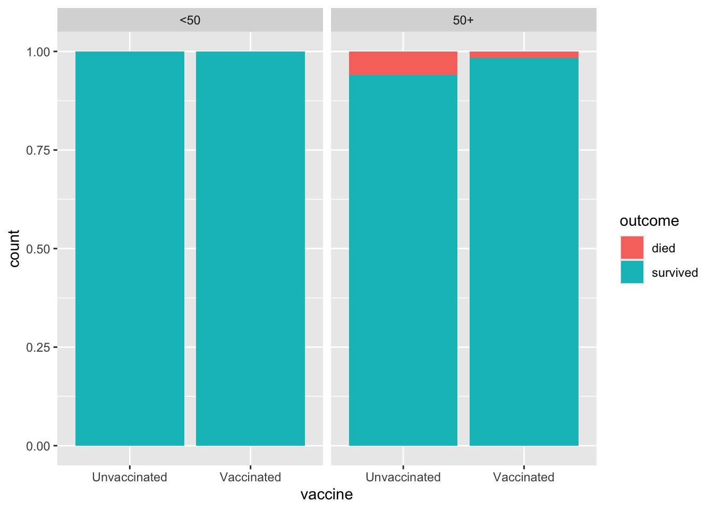

library(tidyverse)AE-02 COVID vaccine and deaths from Delta variant
Application exercise
Suggested answers
For this AE, we want to explore the question “How do deaths from COVID cases compare between people who are vaccinated and those unvaccinated?”
Goals
Create data visualizations and calculate summary statistics for comparing trends across groups
Distinguishing observational studies and experiments
Identifying confounding variables and understanding Simpson’s paradox
R Goals
In addition to using ggplot to produce graphs, some new R commands that we’ll use in this AE are: count, group_by, mutate, filter, select.
Packages
The tidyverse package contains many of the commands listed above which make working with data easier.
Data
The data for this case study come from a technical briefing published by Public Health England in August 2021 on COVID cases, vaccinations, and deaths from the Delta variant. Each observation is a patient visiting emergency care. Rather than loading an R package that contains this data, we will import the data directly from a file.
delta <- read_csv("delta.csv")Rows: 268166 Columns: 3
── Column specification ────────────────────────────────────────────────────────
Delimiter: ","
chr (3): vaccine, age, outcome
ℹ Use `spec()` to retrieve the full column specification for this data.
ℹ Specify the column types or set `show_col_types = FALSE` to quiet this message.# add code hereUnderstanding the data
Notice that to answer this question, you had to first run the print or glimpse command. This might seem a bit clumsy, but turns out we can incorporate code to get the answers to these qestions directly into our narrative. This is done with inline code, shown here:
There are 268166 rows and 3 columns in the dataset.
When you render this document, the correct values will be inserted into the appropriate place!
Visualizing categorical data
To start understanding this data, let’s create a visualization of health outcome by vaccine status that will allow us to compare the proportion of deaths across those who are and are not vaccinated.
ggplot(delta, aes(x = vaccine, fill = outcome)) +
geom_bar(position = "fill")
Summarizing catagorical data
You may have noticed that it’s difficult to see any difference between the two groups from this bar graph. So instead, let’s calculate the actual proportions. To do this, we need to know how many vaccinated patients died and how many unvaccinated patients died. Once we have those numbers, we can calculate proportions.
delta |>
count(vaccine, outcome)# A tibble: 4 × 3
vaccine outcome n
<chr> <chr> <int>
1 Unvaccinated died 250
2 Unvaccinated survived 150802
3 Vaccinated died 477
4 Vaccinated survived 116637At heart, R is a fancy calculator, so there’s no reason we can’t ask it to do these calculations for us! The following code does this and adds a new column to the output with these values.
delta |>
count(vaccine, outcome) |>
group_by(vaccine) |>
mutate(prop = n / sum(n))# A tibble: 4 × 4
# Groups: vaccine [2]
vaccine outcome n prop
<chr> <chr> <int> <dbl>
1 Unvaccinated died 250 0.00166
2 Unvaccinated survived 150802 0.998
3 Vaccinated died 477 0.00407
4 Vaccinated survived 116637 0.996 Improved Visualization and Summary
Our next step is to investigate how controlling for an additional variable changes our understanding of the data. In particular, we want to control for age.
First, a visualization. These are the same as before, except that we get two separate graphs where the data has been separated (faceted) by the age variable.
ggplot(delta, aes(x = vaccine, fill = outcome)) +
geom_bar(position = "fill") +
facet_wrap(~age)
Next, we calculate the numerical proportions. This time, there’s an additional variable we’re using to group the population.
delta |>
count(age, vaccine, outcome) |>
group_by(age, vaccine) |>
mutate(prop = n / sum(n))# A tibble: 8 × 5
# Groups: age, vaccine [4]
age vaccine outcome n prop
<chr> <chr> <chr> <int> <dbl>
1 50+ Unvaccinated died 205 0.0596
2 50+ Unvaccinated survived 3235 0.940
3 50+ Vaccinated died 459 0.0168
4 50+ Vaccinated survived 26848 0.983
5 <50 Unvaccinated died 45 0.000305
6 <50 Unvaccinated survived 147567 1.00
7 <50 Vaccinated died 18 0.000200
8 <50 Vaccinated survived 89789 1.00 Simpson’s Paradox
Simpson’s paradox is a phenomenon in which a trend appears in subsets of the data, but disappears or reverses when the subsets are combined. The paradox can be resolved when confounding variables and causal relations are appropriately addressed in the analysis.
Summary
To summarize our findings, let’s begin by calculating the percentages of vaccinated/unvaccinated patients that died. This is essentially the same calculation that we did before, but we’re converting the proportion into a percentage and also doing it all in one code chunk.
delta |>
count(vaccine, outcome) |>
group_by(vaccine) |>
mutate(perc = round(n / sum(n) * 100, 2)) |>
filter(outcome == "died") |>
select(-outcome, -n)# A tibble: 2 × 2
# Groups: vaccine [2]
vaccine perc
<chr> <dbl>
1 Unvaccinated 0.17
2 Vaccinated 0.41Here we do the same thing, but further break down the population by age. We are also asking R to assign the output of this code chunk to a variable called vaccine_age_outcome_perc. The reason for doing this is so that we can do something else with this output later on.
vaccine_age_outcome_perc <- delta |>
count(vaccine, age, outcome) |>
group_by(vaccine, age) |>
mutate(perc = round(n / sum(n) * 100, 2)) |>
filter(outcome == "died") |>
select(-outcome, -n)
vaccine_age_outcome_perc# A tibble: 4 × 3
# Groups: vaccine, age [4]
vaccine age perc
<chr> <chr> <dbl>
1 Unvaccinated 50+ 5.96
2 Unvaccinated <50 0.03
3 Vaccinated 50+ 1.68
4 Vaccinated <50 0.02Lastly, we pivot these data for better display; this just means that we’re reorganizing the output from the previous code into a form that easier to interpret. Notice how we’re using the variable we defined previously in this new code chunk!
vaccine_age_outcome_perc |>
pivot_wider(names_from = age, values_from = perc)# A tibble: 2 × 3
# Groups: vaccine [2]
vaccine `50+` `<50`
<chr> <dbl> <dbl>
1 Unvaccinated 5.96 0.03
2 Vaccinated 1.68 0.02Weighting
We now know that it’s misleading to talk about a single death rate for an unvaccinated population since age is a confounding variable. However, one thing we can do is to combine the two rates for the two age groups in a way that accounts for the sizes of those two groups.
First, calculate what proportion of the total population is in each of our two age categories.
age_props <- delta |>
count(age) |>
mutate(p = n / sum(n))
age_props# A tibble: 2 × 3
age n p
<chr> <int> <dbl>
1 50+ 30747 0.115
2 <50 237419 0.885Next, we combine our two death rates to account for age using these proportions.
vaccine_age_outcome_perc |>
mutate(perc_wt = if_else(age == "50+", perc * 0.115, perc * 0.885)) |>
group_by(vaccine) |>
summarize(perc = sum(perc_wt))# A tibble: 2 × 2
vaccine perc
<chr> <dbl>
1 Unvaccinated 0.712
2 Vaccinated 0.211Acknowledgements
This case study is inspired by Statistical Literacy: Simpson’s Paradox and Covid Deaths by Milo Schield.